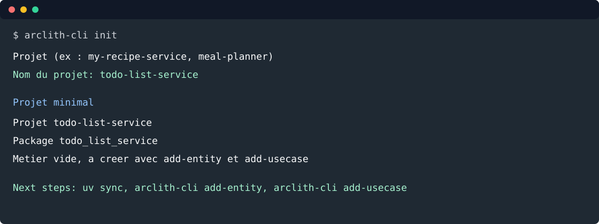

1. Initialiser le projet¶
Objectif: créer uniquement le projet Arclith minimal, sans entité métier et sans CRUD généré.

Depuis le dossier qui contiendra les projets de test:
mkdir -p ~/Perso/projets/demo-arclith
cd ~/Perso/projets/demo-arclith
arclith-cli init
Répondre au prompt:
Projet (ex : my-recipe-service, meal-planner)
Nom du projet: todo-list-service
Entrer dans le projet et installer les dépendances:
cd todo-list-service
uv sync
Le projet démarre avec repository: memory:
# config/adapters/adapters.yaml
logger: console
repository: memory
observability: none
La structure attendue est:
todo-list-service/
config/
src/todo_list_service/
domain/
application/
adapters/
infrastructure/
tests/
main.py
pyproject.toml
Tester¶
Le scaffold minimal contient un test de bootstrap:
uv run python -m pytest
Résultat attendu:
tests/test_project_bootstrap.py .. [100%]
Voie rapide¶
arclith-cli init todo-list-service
cd todo-list-service
uv sync
uv run python -m pytest
Étape suivante: créer l'entité Todo.